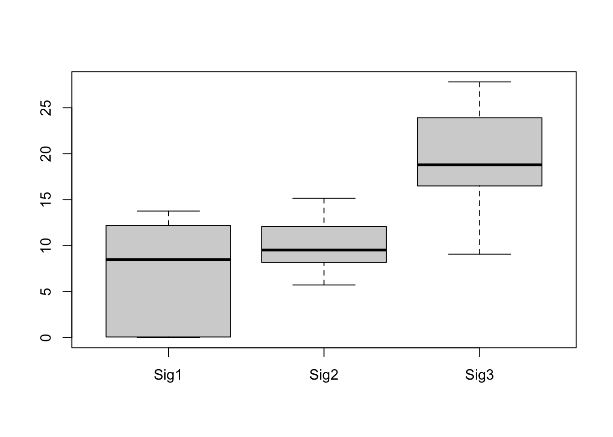

Chapter 4 Signature Fit: Sample Exposure Quantification
Besides de novo signature discovery shown in previous chapters, another common task is that
you have gotten a reference signature database (either from known database like COSMIC or de novo discovery step), you want to know how these signatures fit in a new sample. That’s the target of sig_fit().
sig_fit() uses multiple methods to compute exposure of pre-defined signatures from the total
alteration spectrum of a (can be more) sample. Use ?sig_fit see more detail.
To show how this function works, we use a sample with maximum mutation counts as example data.
i <- which.max(apply(mt_tally$nmf_matrix, 1, sum))
example_mat <- mt_tally$nmf_matrix[i, , drop = FALSE] %>% t()head(example_mat)
#> TCGA-AB-3009
#> A[T>C]A 0
#> C[T>C]A 0
#> G[T>C]A 0
#> T[T>C]A 0
#> A[C>T]A 0
#> C[C>T]A 04.1 Fit Signatures from reference databases
For SBS signatures, users may want to directly use reference signatures from COSMIC database. This can be done by specifying the option sig_index.
sig_fit(example_mat, sig_index = 1:30)
#> ℹ [2020-05-06 22:06:29]: Started.
#> ✓ [2020-05-06 22:06:29]: Signature index detected.
#> ℹ [2020-05-06 22:06:29]: Checking signature database in package.
#> ℹ [2020-05-06 22:06:29]: Checking signature index.
#> ℹ [2020-05-06 22:06:29]: Valid index for db 'legacy':
#> 1 2 3 4 5 6 7 8 9 10 11 12 13 14 15 16 17 18 19 20 21 22 23 24 25 26 27 28 29 30
#> ✓ [2020-05-06 22:06:29]: Database and index checked.
#> ✓ [2020-05-06 22:06:29]: Signature normalized.
#> ℹ [2020-05-06 22:06:29]: Checking row number for catalog matrix and signature matrix.
#> ✓ [2020-05-06 22:06:29]: Checked.
#> ℹ [2020-05-06 22:06:29]: Checking rownames for catalog matrix and signature matrix.
#> ℹ [2020-05-06 22:06:29]: Matrix V and W don't have same orders. Try reordering...
#> ✓ [2020-05-06 22:06:29]: Checked.
#> ✓ [2020-05-06 22:06:29]: Method 'LS' detected.
#> ✓ [2020-05-06 22:06:29]: Corresponding function generated.
#> ℹ [2020-05-06 22:06:29]: Calling function.
#> ✓ [2020-05-06 22:06:29]: Done.
#> ℹ [2020-05-06 22:06:29]: Generating output signature exposures.
#> ✓ [2020-05-06 22:06:29]: Done.
#> ℹ [2020-05-06 22:06:29]: 0.045 secs elapsed.
#> TCGA-AB-3009
#> COSMIC_1 17.981
#> COSMIC_2 0.000
#> COSMIC_3 0.000
#> COSMIC_4 0.000
#> COSMIC_5 0.000
#> COSMIC_6 4.508
#> COSMIC_7 0.000
#> COSMIC_8 0.000
#> COSMIC_9 0.000
#> COSMIC_10 3.592
#> COSMIC_11 0.000
#> COSMIC_12 0.000
#> COSMIC_13 0.000
#> COSMIC_14 0.000
#> COSMIC_15 8.393
#> COSMIC_16 0.000
#> COSMIC_17 0.000
#> COSMIC_18 0.000
#> COSMIC_19 0.000
#> COSMIC_20 0.000
#> COSMIC_21 0.000
#> COSMIC_22 1.526
#> COSMIC_23 0.000
#> COSMIC_24 0.000
#> COSMIC_25 0.000
#> COSMIC_26 0.000
#> COSMIC_27 0.000
#> COSMIC_28 0.000
#> COSMIC_29 0.000
#> COSMIC_30 0.000That’s it!
You can set type = "relative" for getting relative exposure.
sig_fit(example_mat, sig_index = 1:30, type = "relative")
#> ℹ [2020-05-06 22:06:29]: Started.
#> ✓ [2020-05-06 22:06:29]: Signature index detected.
#> ℹ [2020-05-06 22:06:29]: Checking signature database in package.
#> ℹ [2020-05-06 22:06:29]: Checking signature index.
#> ℹ [2020-05-06 22:06:29]: Valid index for db 'legacy':
#> 1 2 3 4 5 6 7 8 9 10 11 12 13 14 15 16 17 18 19 20 21 22 23 24 25 26 27 28 29 30
#> ✓ [2020-05-06 22:06:29]: Database and index checked.
#> ✓ [2020-05-06 22:06:29]: Signature normalized.
#> ℹ [2020-05-06 22:06:29]: Checking row number for catalog matrix and signature matrix.
#> ✓ [2020-05-06 22:06:29]: Checked.
#> ℹ [2020-05-06 22:06:29]: Checking rownames for catalog matrix and signature matrix.
#> ℹ [2020-05-06 22:06:29]: Matrix V and W don't have same orders. Try reordering...
#> ✓ [2020-05-06 22:06:29]: Checked.
#> ✓ [2020-05-06 22:06:29]: Method 'LS' detected.
#> ✓ [2020-05-06 22:06:29]: Corresponding function generated.
#> ℹ [2020-05-06 22:06:29]: Calling function.
#> ✓ [2020-05-06 22:06:29]: Done.
#> ℹ [2020-05-06 22:06:29]: Generating output signature exposures.
#> ✓ [2020-05-06 22:06:29]: Done.
#> ℹ [2020-05-06 22:06:29]: 0.041 secs elapsed.
#> TCGA-AB-3009
#> COSMIC_1 0.499
#> COSMIC_2 0.000
#> COSMIC_3 0.000
#> COSMIC_4 0.000
#> COSMIC_5 0.000
#> COSMIC_6 0.125
#> COSMIC_7 0.000
#> COSMIC_8 0.000
#> COSMIC_9 0.000
#> COSMIC_10 0.100
#> COSMIC_11 0.000
#> COSMIC_12 0.000
#> COSMIC_13 0.000
#> COSMIC_14 0.000
#> COSMIC_15 0.233
#> COSMIC_16 0.000
#> COSMIC_17 0.000
#> COSMIC_18 0.000
#> COSMIC_19 0.000
#> COSMIC_20 0.000
#> COSMIC_21 0.000
#> COSMIC_22 0.042
#> COSMIC_23 0.000
#> COSMIC_24 0.000
#> COSMIC_25 0.000
#> COSMIC_26 0.000
#> COSMIC_27 0.000
#> COSMIC_28 0.000
#> COSMIC_29 0.000
#> COSMIC_30 0.000For multiple samples, you can return a data.table, it can be easier to integrate with other information in R.
sig_fit(t(mt_tally$nmf_matrix[1:5, ]), sig_index = 1:30, return_class = "data.table", rel_threshold = 0.05)
#> ℹ [2020-05-06 22:06:29]: Started.
#> ✓ [2020-05-06 22:06:29]: Signature index detected.
#> ℹ [2020-05-06 22:06:29]: Checking signature database in package.
#> ℹ [2020-05-06 22:06:29]: Checking signature index.
#> ℹ [2020-05-06 22:06:29]: Valid index for db 'legacy':
#> 1 2 3 4 5 6 7 8 9 10 11 12 13 14 15 16 17 18 19 20 21 22 23 24 25 26 27 28 29 30
#> ✓ [2020-05-06 22:06:29]: Database and index checked.
#> ✓ [2020-05-06 22:06:29]: Signature normalized.
#> ℹ [2020-05-06 22:06:29]: Checking row number for catalog matrix and signature matrix.
#> ✓ [2020-05-06 22:06:29]: Checked.
#> ℹ [2020-05-06 22:06:29]: Checking rownames for catalog matrix and signature matrix.
#> ℹ [2020-05-06 22:06:29]: Matrix V and W don't have same orders. Try reordering...
#> ✓ [2020-05-06 22:06:29]: Checked.
#> ✓ [2020-05-06 22:06:29]: Method 'LS' detected.
#> ✓ [2020-05-06 22:06:29]: Corresponding function generated.
#> ℹ [2020-05-06 22:06:29]: Calling function.
#> ✓ [2020-05-06 22:06:29]: Done.
#> ℹ [2020-05-06 22:06:29]: Generating output signature exposures.
#> ✓ [2020-05-06 22:06:29]: Done.
#> ℹ [2020-05-06 22:06:29]: 0.06 secs elapsed.
#> sample COSMIC_1 COSMIC_2 COSMIC_3 COSMIC_4 COSMIC_5 COSMIC_6 COSMIC_7 COSMIC_8 COSMIC_9 COSMIC_10 COSMIC_11 COSMIC_12 COSMIC_13
#> 1: TCGA-AB-2802 2.553 0.81 0 0.000 0 1.244 0 0.000 0 0 0 0 0
#> 2: TCGA-AB-2803 8.621 0.00 0 1.793 0 0.000 0 1.339 0 0 0 0 0
#> 3: TCGA-AB-2804 6.534 0.00 0 0.000 0 0.000 0 0.000 0 0 0 0 0
#> 4: TCGA-AB-2805 11.820 0.00 0 0.000 0 0.000 0 0.000 0 0 0 0 0
#> 5: TCGA-AB-2806 9.521 0.00 0 0.000 0 0.000 0 0.000 0 0 0 0 0
#> COSMIC_14 COSMIC_15 COSMIC_16 COSMIC_17 COSMIC_18 COSMIC_19 COSMIC_20 COSMIC_21 COSMIC_22 COSMIC_23 COSMIC_24 COSMIC_25 COSMIC_26
#> 1: 0 0.000 0 0.000 0.000 3.103 0 0 2.29 0 0 0 0
#> 2: 0 0.000 0 0.000 0.000 2.246 0 0 0.00 0 0 0 0
#> 3: 0 0.000 0 0.000 0.000 0.000 0 0 0.00 0 0 0 0
#> 4: 0 0.000 0 1.625 0.000 0.000 0 0 0.00 0 0 0 0
#> 5: 0 2.068 0 0.000 3.237 0.000 0 0 0.00 0 0 0 0
#> COSMIC_27 COSMIC_28 COSMIC_29 COSMIC_30
#> 1: 0 0 0 0.000
#> 2: 0 0 0 0.000
#> 3: 0 0 0 0.466
#> 4: 0 0 0 0.000
#> 5: 0 0 0 0.000When you set multiple signatures, we recommend setting rel_threshold option, which will set exposure of a signature to 0 if its relative exposure in a sample less than the rel_threshold.
4.2 Fit Custom Signatures
We have already determined the SBS signatures before. Here we can set them to sig option.
sig_fit(example_mat, sig = mt_sig)
#> ℹ [2020-05-06 22:06:29]: Started.
#> ✓ [2020-05-06 22:06:29]: Signature object detected.
#> ✓ [2020-05-06 22:06:29]: Database and index checked.
#> ✓ [2020-05-06 22:06:29]: Signature normalized.
#> ℹ [2020-05-06 22:06:29]: Checking row number for catalog matrix and signature matrix.
#> ✓ [2020-05-06 22:06:29]: Checked.
#> ℹ [2020-05-06 22:06:29]: Checking rownames for catalog matrix and signature matrix.
#> ✓ [2020-05-06 22:06:29]: Checked.
#> ✓ [2020-05-06 22:06:29]: Method 'LS' detected.
#> ✓ [2020-05-06 22:06:29]: Corresponding function generated.
#> ℹ [2020-05-06 22:06:29]: Calling function.
#> ✓ [2020-05-06 22:06:29]: Done.
#> ℹ [2020-05-06 22:06:29]: Generating output signature exposures.
#> ✓ [2020-05-06 22:06:29]: Done.
#> ℹ [2020-05-06 22:06:29]: 0.029 secs elapsed.
#> TCGA-AB-3009
#> Sig1 6.739
#> Sig2 7.759
#> Sig3 21.5024.3 Performance Comparison
Now that we can use sig_fit for getting optimal exposures, we can compare the RSS between raw matrix and the reconstructed matrix either by NMF and sig_fit().
i.e.
\[ RSS = \sum(\hat H - H)^2 \]
## Exposure got from NMF
sum((apply(mt_sig$Signature, 2, function(x) x / sum(x)) %*% mt_sig$Exposure - t(mt_tally$nmf_matrix))^2)
#> [1] 1868.616## Exposure optimized by sig_fit
H_estimate <- apply(mt_sig$Signature, 2, function(x) x / sum(x)) %*% sig_fit(t(mt_tally$nmf_matrix), sig = mt_sig)
#> ℹ [2020-05-06 22:06:30]: Started.
#> ✓ [2020-05-06 22:06:30]: Signature object detected.
#> ✓ [2020-05-06 22:06:30]: Database and index checked.
#> ✓ [2020-05-06 22:06:30]: Signature normalized.
#> ℹ [2020-05-06 22:06:30]: Checking row number for catalog matrix and signature matrix.
#> ✓ [2020-05-06 22:06:30]: Checked.
#> ℹ [2020-05-06 22:06:30]: Checking rownames for catalog matrix and signature matrix.
#> ✓ [2020-05-06 22:06:30]: Checked.
#> ✓ [2020-05-06 22:06:30]: Method 'LS' detected.
#> ✓ [2020-05-06 22:06:30]: Corresponding function generated.
#> ℹ [2020-05-06 22:06:30]: Calling function.
#> ✓ [2020-05-06 22:06:30]: Done.
#> ℹ [2020-05-06 22:06:30]: Generating output signature exposures.
#> ✓ [2020-05-06 22:06:30]: Done.
#> ℹ [2020-05-06 22:06:30]: 0.043 secs elapsed.
H_estimate <- apply(H_estimate, 2, function(x) ifelse(is.nan(x), 0, x))
H_real <- t(mt_tally$nmf_matrix)
sum((H_estimate - H_real)^2)
#> [1] 1778.2654.4 Estimate Exposure Stability by Bootstrap
This feature is based on sig_fit(), it uses the resampling data of original input and runs sig_fit() multiple times to estimate the exposure. Bootstrap replicates >= 100 is recommended, here I just use 10 times for illustration.
bt_result <- sig_fit_bootstrap(example_mat, sig = mt_sig, n = 10)
#> ℹ [2020-05-06 22:06:30]: Started.
#> ℹ [2020-05-06 22:06:30]: Checking catalog.
#> ✓ [2020-05-06 22:06:30]: Done.
#> ℹ [2020-05-06 22:06:30]: About to start bootstrap.
#>
→ Bootstrapping 10 times.
→ Total 10 times, starting no.1.
→ Total 10 times, starting no.2.
→ Total 10 times, starting no.3.
→ Total 10 times, starting no.4.
→ Total 10 times, starting no.5.
→ Total 10 times, starting no.6.
→ Total 10 times, starting no.7.
→ Total 10 times, starting no.8.
→ Total 10 times, starting no.9.
→ Total 10 times, starting no.10.
✓ [2020-05-06 22:06:31]: Bootstrap done.
#> ✓ [2020-05-06 22:06:31]: Signature exposures collected.
#> ✓ [2020-05-06 22:06:31]: Errors collected.
#> ✓ [2020-05-06 22:06:31]: Done.
#> ℹ [2020-05-06 22:06:31]: 0.513 secs elapsed.
bt_result
#> $expo
#> Rep_1 Rep_2 Rep_3 Rep_4 Rep_5 Rep_6 Rep_7 Rep_8 Rep_9 Rep_10
#> Sig1 8.658 0.000 8.148 8.561 3.075 0.167 9.222 9.912 13.838 7.223
#> Sig2 7.721 0.799 10.847 5.608 5.955 11.248 4.439 10.417 9.248 9.513
#> Sig3 19.622 35.201 17.005 21.832 26.970 24.584 22.340 15.671 12.914 19.263
#>
#> $errors
#> Rep_1 Rep_2 Rep_3 Rep_4 Rep_5 Rep_6 Rep_7 Rep_8 Rep_9 Rep_10
#> 7.267 7.644 7.370 7.226 7.255 7.291 7.226 7.426 7.590 7.285Currently, I haven’t create plot method for the result, but you can plot it very easily with boxplot().
